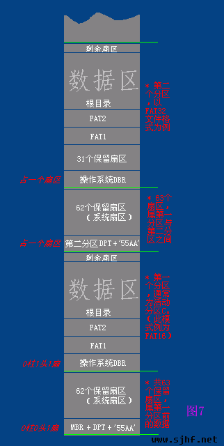
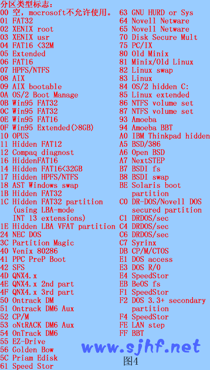
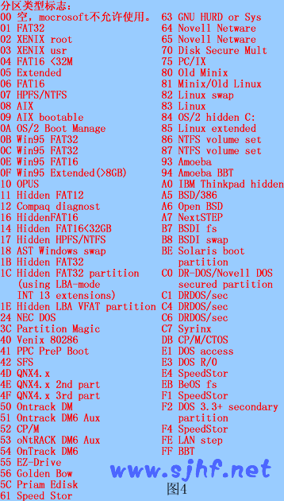

声明
本文是我在阅读《FAT32文件系统详解》和《4.5万字透视FAT32系统》的过程中所做的摘要记录和一些自己的理解。详细的内容请参考原文，我在阅读过程中，已对第一篇文章中出现的严重影响阅读的错别字进行了修改，有兴趣的可以点击上边的文件名直接下载我上传的链接文档。建议初学者先看第一篇文章，比较容易理解。然后再看第二篇文章，第二篇文章写的比较严谨。
重要概念
- 磁道、扇区、柱面 这三个概念一定要搞清楚，否则很难理解硬件的工作原理。其中，磁盘扇区编号是从1开始的，而各分区的扇区编号是从0开始的。这一点要明白，不然容易在文章中迷失…
- MBR(Master Boot Recotder,主引导记录/主引导扇区) 它位于磁盘的第一个扇区（0#柱面0#磁头1#扇区），是计算机启动后执行完BIOS固件以后，系统首先要访问的扇区。到这里，系统的控制权就交由MBR来执行了。MBR由446字节的引导代码+64字节的硬盘分区表(DPT,Disk Partition Table)+“55 AA”(结束符) 组成，共512字节。
- EBR(Extended Boot Record,扩展引导记录) 由于MBR扇区只包含了4个分区列表，如果用户需要将磁盘分为4个以上的分区的话，就需要由EBR来处理了。
- DBR(DOS Boot Record,系统引导扇区) 它通常占用分区的第0扇区，共512字节。这512个字节又是由跳转指令，厂商标志和操作系统版本号，BPB(BIOS Parameter Block)，扩展BPB，os引导程序，结束标志几部分组成。是CPU进入各分区进行数据操作时首先要访问的扇区。我的理解是：它在分区中的作用和MBR在磁盘中的作用类似。
- BPB(BIOS Parameter Block) 它是DBR中的一段参数信息，可以帮助系统找到相关数据。
- 数据单元 在向磁盘写入数据或读取数据时，单次操作的数据量就成为数据单元。在FAT和NTFS文件系统中，将它称作“簇(Cluster)”。一个数据单元由若干个连续的扇区组成，它的大小总是2的整数次幂个扇区，并在建立文件系统时确定。FAT中簇的最大值为64个扇区，即32KB。所有簇从2开始进行编号。
关键点解读
- 对MBR、DBR这两个引导扇区的意义和作用方式容易混淆。这里说下我的理解：MBR就是整个磁盘的引导扇区，告诉CPU该如何找到每个分区。而DBR就是每个分区里边的引导扇区，CPU要想找到某个分区里的具体数据，需要问DBR要详细信息。按照这个思路，再看下面这个图(摘自《4.5万字透视FAT32系统》一文中的图7），就可以分辨的很清楚了。
 - 保留区里到底都存了那些数据呢？分区内的保留区里存储的有DBR、FSINFO、以及其备份扇区。整个磁盘开始的保留区内则存放的是MBR。
- FAT表区、表项、根目录、目录项——这几个内容的联系和的运作原理比较容易把人绕晕。建议自己在阅读的时候参考链表原理，同时绘制出图形来，这样就会对它们之间的运行原理比较清晰了。
关键扇区内容归纳
这里只对MBR、DBR、FSINFO信息扇区的结构做归纳，方便以后直接查阅。详情请阅读这以上推荐的两篇文章，里面都有详细的讲解。
1、MBR结构如表1所示
 
2、DBR结构如表2所示

3、FAT32在保留区中增加了一个FSINFO扇区，用以记录文件系统中空闲簇的数量以及下一个可用簇的簇号等信息。该扇区一般位于文件系统的1号扇区，即DBR扇区之后。FSINFO信息扇区结构如表3所示